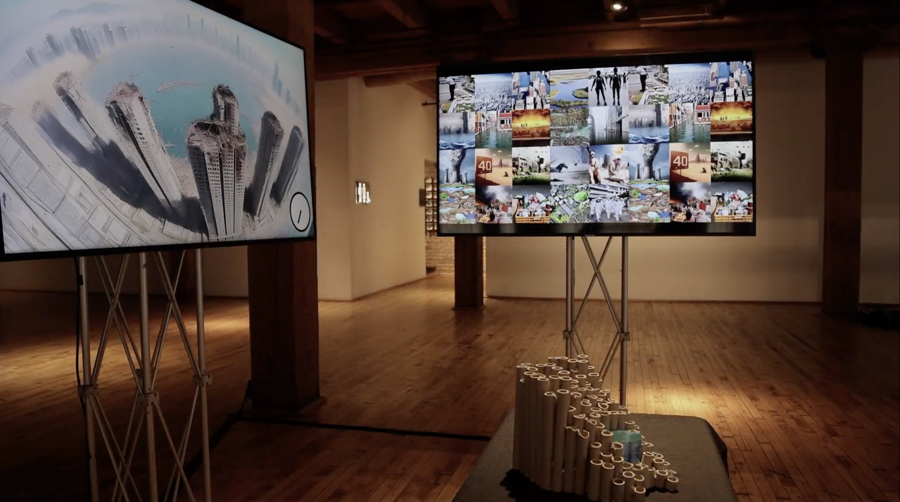

TIME ENOUGH
Research-based Art Practice
2024/06
C&C ’24 Inside | Out: Organic Creative Spaces
Bridgeport Art Center, Chicago, IL, USA
It is difficult to tangibly feel climate change because it must be imagined into the future. The original cave painting in pre-historic times, too was an attempt to imagine the future in a creative space that we no longer understand. Generative AI (GenAI) serves as a tool for us today much as cave paintings were for pre-historic humans to imagine a climate future by interfacing our tools into drawings of our visions. TIME ENOUGH is a collective voice of today concerning the future narrated using GenAI, showing both how we envision challenges of the climate and how we may adapt to them in the future. These images and videos recreate a modern version of the age-old cave painting in the first truly creative space in human history, showing how our imaginations and anxieties of today are mere echoes of what concerned our ancestors from a seemingly remote time.
Collaborated with RAY LC, Latisha Besariani Hendra, Kexue Fu
Project Website: Project website
Related Publication: TIME ENOUGH: Generative AI Visions of Climate Change as Cave Paintings of the Future (CC 24)

